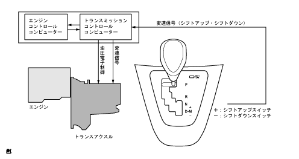

| Sport Sequential Shiftmatic |
| ● |
With sport sequential Shiftmatic, selecting the M position (indicating manual shift), located beside the D position of the shift lever, changes from automatic shift mode to sport sequential Shiftmatic mode, enabling driving in the gear selected by shift lever operation and providing engine braking force according to each gear.
|
| ● |
A gate type shift lever has been adopted, and operating the shift up switch/shift down switch creates a manual-like shift feel.
|
 |
 Indicator & Gear Display Indicator & Gear Display
|
| Gears Available in Sequential Shift Mode
|
| Automatic Shifting Related to Sport Sequential Shiftmatic
|
| Rejections (Restrictions) Related to Sport Sequential Shiftmatic
|